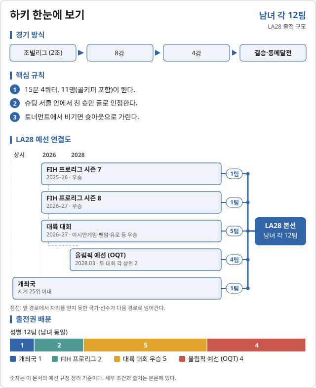

하키 (Field hockey)

LA28 출전 확정 2026-11-06 기준
| 국가 | 경로 | 비고 |
|---|---|---|
| 개최국 | ||
| FIH 프로리그 2025–26 우승 | ||
| 2026 아시안게임 우승 | 결승 5-1 말레이시아 |
| 국가 | 경로 | 비고 |
|---|---|---|
| 개최국 | ||
| FIH 프로리그 2025–26 우승 | ||
| 2026 아시안게임 우승 | 결승 1-0 중국 |
한국은 아시안게임 남녀 모두 4위다. 남은 자리는 프로리그 2026–27, 대륙 선수권 2027, 2028년 초 올림픽 예선(OQT)에서 정한다.
LA28 예선 단계 2026.10.31 기준
![하키 LA28 예선 단계. 남자: FIH 프로리그 2025–26 (~2026.06, 종료, 우승 → LA28) → 2026 아시안게임 (2026.09 – 10, 종료, 우승 → LA28, 한국 4위 (동메달 결정전 파키스탄에 3-5)) → FIH 프로리그 2026–27 (2026.12 – 2027.06, 예정, 우승 (또는 2위) → LA28) → 올림픽 예선 (OQT) 2개 (2028 초, 예정, 대회마다 상위 2팀 → LA28, 한국 세계랭킹으로 초청 16팀 결정) → LA28 본선. 여자: FIH 프로리그 2025–26 (~2026.06, 종료, 우승 → LA28) → 2026 아시안게임 (2026.09 – 10, 종료, 우승 → LA28, 한국 4위 (동메달 결정전 일본과 0-0, 승부타 2-4)) → FIH 프로리그 2026–27 (2026.12 – 2027.06, 예정, 우승 (또는 2위) → LA28) → 올림픽 예선 (OQT) 2개 (2028 초, 예정, 대회마다 상위 2팀 → LA28, 한국 세계랭킹으로 초청 16팀 결정) → LA28 본선.](assets/pathways/olhockey.svg)
| 단계 | 시기 | 상태 | 다음 단계 | 결과·진출 | 한국 |
|---|---|---|---|---|---|
| FIH 프로리그 2025–26 | ~2026.06 | 종료 | 우승 → LA28 | ||
| 2026 아시안게임 | 2026.09 – 10 | 종료 | 우승 → LA28 | 4위 (동메달 결정전 파키스탄에 3-5) | |
| FIH 프로리그 2026–27 | 2026.12 – 2027.06 | 예정 | 우승 (또는 2위) → LA28 | ||
| 올림픽 예선 (OQT) 2개 | 2028 초 | 예정 | 대회마다 상위 2팀 → LA28 | 세계랭킹으로 초청 16팀 결정 |
| 단계 | 시기 | 상태 | 다음 단계 | 결과·진출 | 한국 |
|---|---|---|---|---|---|
| FIH 프로리그 2025–26 | ~2026.06 | 종료 | 우승 → LA28 | ||
| 2026 아시안게임 | 2026.09 – 10 | 종료 | 우승 → LA28 | 4위 (동메달 결정전 일본과 0-0, 승부타 2-4) | |
| FIH 프로리그 2026–27 | 2026.12 – 2027.06 | 예정 | 우승 (또는 2위) → LA28 | ||
| 올림픽 예선 (OQT) 2개 | 2028 초 | 예정 | 대회마다 상위 2팀 → LA28 | 세계랭킹으로 초청 16팀 결정 |
OQT 초청 16팀은 마지막 2027 대륙 선수권이 끝난 날의 FIH 세계랭킹 순으로 정한다.
출처: FIH · LA28 예선 규정 (PDF) · 일간스포츠 · 남자 하키 준결승 · Wikipedia · 2026 아시안게임 하키
2026 주요 대회 결과 2026-11-07 05:04 KST
위키백과 대회 문서에서 자동으로 모은다. 대회 중에는 한 시간마다 새로 읽는다. 한국 선수가 있는 줄은 붉게 칠했다. 하계 실시간 전체 →
아이치·나고야 아시안게임 아이치·나고야 · 09.18~10.03 종료 결과 2/2종목 · 한국 금0 은0 동0
| 종목 | 금 | 은 | 동 |
|---|---|---|---|
| Medalists | |||
| 남자 단체 | |||
| 여자 단체 | |||
메달 순위:  인도 2-0-0 ·
인도 2-0-0 ·  중국 0-1-0 ·
중국 0-1-0 ·  말레이시아 0-1-0 ·
말레이시아 0-1-0 ·  일본 0-0-1 ·
일본 0-0-1 ·  파키스탄 0-0-1
파키스탄 0-0-1
출처: 위키백과 Field hockey at the 2026 Asian Games · 2026-11-06 22:37 읽음
예선 규정
| 경로 | 쿼터 | 배정 방식 |
|---|---|---|
| 개최국 | 1 | 세계랭킹 25위 이내 직접 배정 |
| FIH 프로리그 시즌 7 우승 | 1 | 2025–26 시즌 우승 NOC |
| FIH 프로리그 시즌 8 우승 | 1 | 2026–27 시즌 우승 NOC (같은 팀이 두 시즌 우승하면 시즌 8 준우승) |
| 대륙 대회 우승 | 5 | 아시안게임(2026), 팬아메리칸게임(2027), 유로하키선수권(2027), 오세아니아컵(2027), 아프리카 올림픽 예선(2027) 각 1 |
| FIH 올림픽 예선 토너먼트 (OQT) | 4 | 2028년 3월, 두 토너먼트 각 상위 2개 NOC |
예선 일정
| 경로 | 기간 | 장소 | 쿼터 |
|---|---|---|---|
| 개최국 | — | 미국 | 1 |
| 2025–26 FIH 프로리그 | 2025.12.09–2026.06.28 | 여러 곳 | 1 |
| 2026 아시안게임 | 2026.09.18–10.03 | 가카미가하라 (일본) | 1 |
| 2026–27 FIH 프로리그 | 2026.12.08–2027.06.20 | 여러 곳 | 1 |
| 2027 팬아메리칸게임 | 2027.07.27–08.06 | 리마 (페루) | 1 |
| 2027 유로하키선수권 | 2027.07.28–08.08 | 런던 (영국) | 1 |
| 2027 오세아니아컵 | 2027.09 (미정) | 미정 | 1 |
| 2027 아프리카 올림픽 예선 | 2027 (미정) | 미정 | 1 |
| 2028 FIH 올림픽 예선 토너먼트 | 2028.03 (미정) | 미정 | 2 + 2 |
| 합계 | 12 |
직전 올림픽 메달리스트
| 세부종목 | 금 | 은 | 동 |
|---|---|---|---|
| 남자 | 네덜란드 | 독일 | 인도 |
| 여자 | 네덜란드 | 중국 | 아르헨티나 |
2024 파리 올림픽 · 위키백과 원문
대한민국
확보 쿼터: 미정.